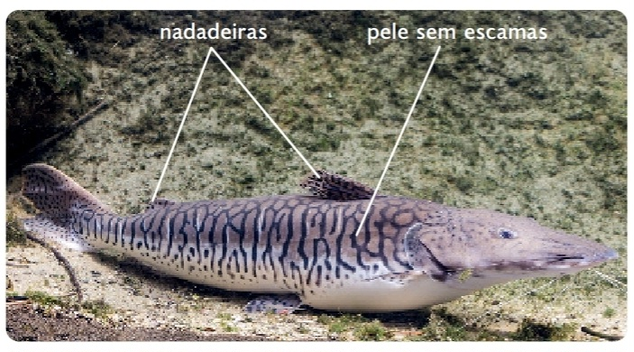
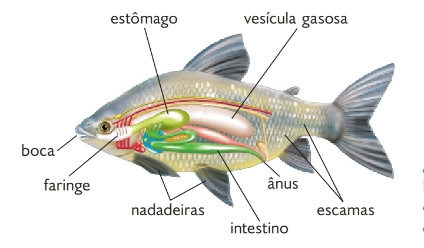
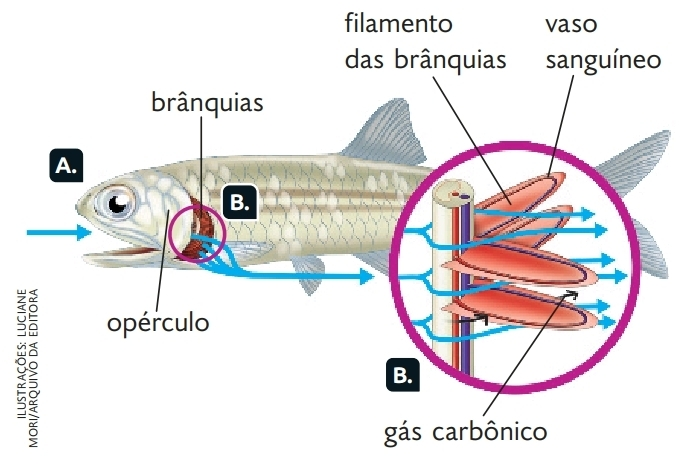
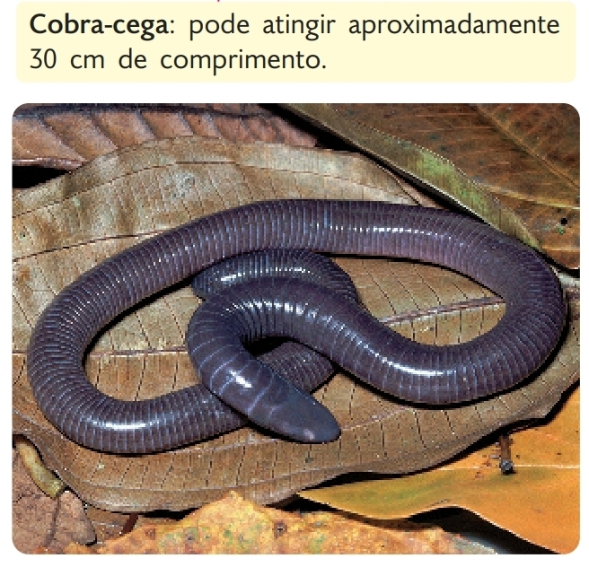
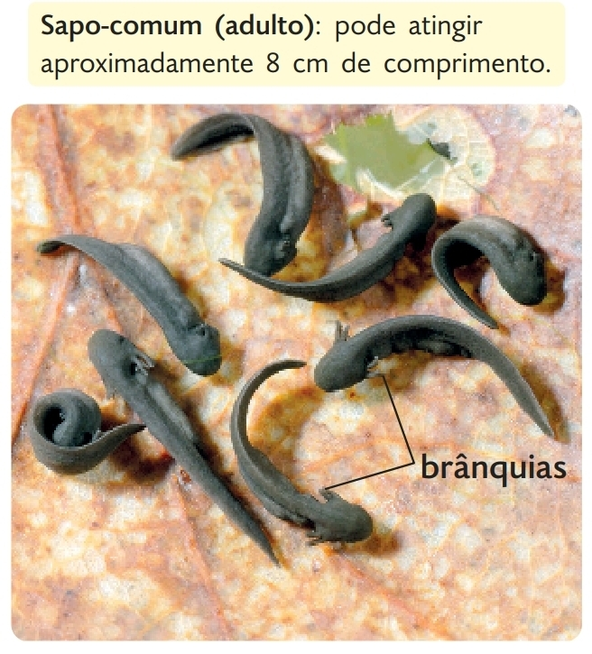
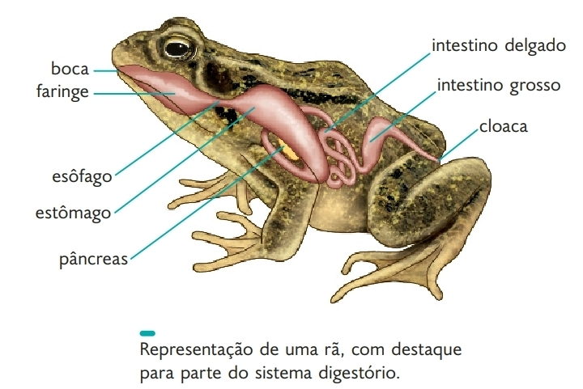
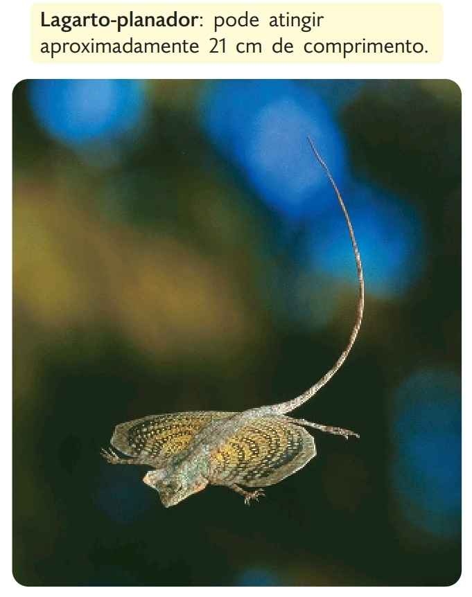
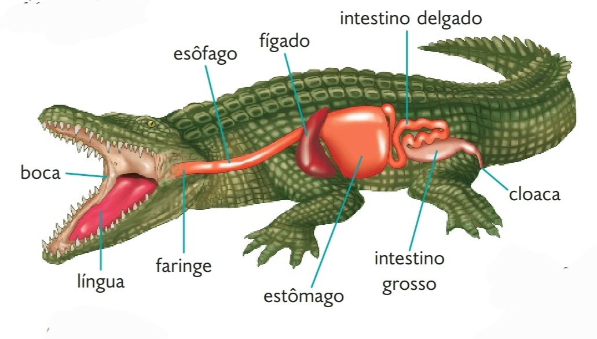

Os peixes habitam ecossistemas aquáticos e podem viver sozinhos ou em grupos, formando cardumes. A maioria das espécies de peixes possui nadadeiras. Além disso, algumas espécies podem ter o corpo coberto por escamas, enquanto outras têm o corpo coberto por uma pele grossa.

Muitas espécies de peixes têm a vesícula gasosa, também conhecida como bexiga natatória. Essa estrutura é preenchida com gases e atua, principalmente, no controle da flutuabilidade do animal.
O sistema digestório dos peixes é formado por boca, faringe, esôfago, estô- mago, intestino e ânus ou cloaca, em certas espécies. Na boca, geralmente são observados dentes e uma língua fixa. Além dessas estruturas, os peixes têm fígado, vesícula biliar e pâncreas, que auxiliam na digestão dos alimentos, por exemplo. Observe a imagem a seguir

Os peixes apresentam sistemas circulatório e respiratório. Na maioria das espé- cies de peixes a respiração ocorre por meio de estruturas chamadas brânquias. Observe a seguir.

A. O gás oxigênio de que o peixe necessita está dissolvido na água do ambiente em que vive. Para obtê-lo, a água entra pela boca do peixe e atinge as brânquias.
B. As brânquias apresentam vasos sanguíneos. Quando a água passa entre os filamentos das brânquias, o gás oxigênio dissolvido na água se difunde para os vasos sanguíneos. Simultaneamente, o gás carbônico presente no sangue é eliminado na água. A água é então liberada para o ambiente por uma abertura lateral, protegida pelo opérculo.
Existem espécies de peixes que possuem pulmões e, por isso, são capazes de absorver o gás oxigênio do ar atmosférico. Essas espécies são conhecidas como peixes pulmonados, como a piramboia.
Para respirar, os peixes pulmonados sobem até a superfície da água e engolem o ar atmosférico, que chega aos pulmões. Nesses órgãos ocorre a absorção do gás oxigênio. Além dos pulmões, os peixes pulmonados também apresentam brânquias.
Sapos, rãs, salamandras e cobras-cegas são exemplos de anfíbios. A maioria dos anfíbios vive parte de seu ciclo de vida em ambientes de água doce e a outra parte em ambiente terrestre. Por isso, em geral, os anfíbios apresentam uma fase de vida larval e aquática e outra fase adulta e terrestre.

Embora a maioria dos anfíbios seja terrestre, muitos vivem em ambientes úmidos por causa de sua pele permeável. Essa permeabilidade possibilita, por exemplo, que os anfíbios realizem trocas gasosas com o ambiente. Além disso, muitos anfíbios precisam de ambientes aquáticos para se reproduzir.
Além da pele, as trocas gasosas ocorrem por meio de brânquias, pulmões ou mucosa bucal. Na fase larval, a respiração ocorre pelas brânquias que são externas ao corpo do animal. Já na fase adulta, as brânquias geralmente desaparecem e o animal passa a respirar por meio de pulmões, pele ou por uma combina- ção dessas formas de respiração.

Os anfíbios são capazes de produzir muco sobre a pele. Esse muco ajuda, por exemplo, a manter a pele úmida.
O sistema digestório dos anfíbios é formado por boca, faringe, esôfago, estômago, intestino delgado, intestino grosso e cloaca. Os anfíbios também apresentam outras estruturas que auxiliam na digestão, como o pâncreas, órgão que produz enzimas digestivas. Observe a seguir a localização desses órgãos em uma rã.

Serpentes, lagartos, jacarés e tartarugas são exemplos de répteis. Os representantes desse grupo de vertebrados apresentam modos de locomoção bastante variados. Esse grupo representa os primeiros vertebrados terrestres. Entre as adaptações que os auxilia a sobreviver fora da água, está a pele recoberta de escamas.
Apesar de algumas espécies viverem em ambientes aquáticos, elas não necessitam de água para se reproduzir, como os anfíbios. Os répteis respiram por meio de pulmões, que são mais desenvolvidos do que os dos anfíbios.

O sistema digestório dos répteis é completo, assim como o dos anfíbios, e termina em uma cloaca.
Observe a seguir os órgãos e as estruturas que compõem o sistema digestório dos répteis.
